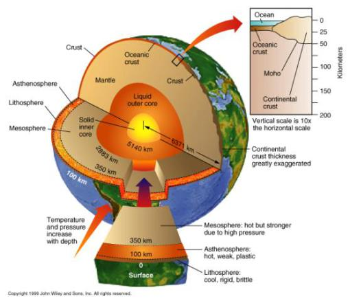
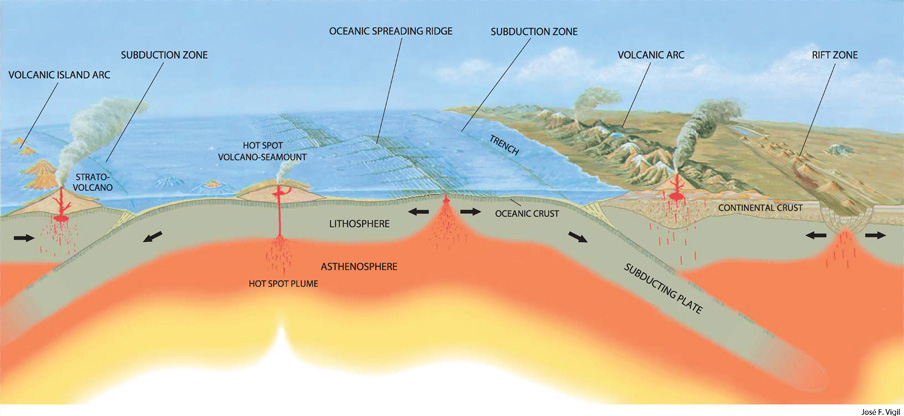
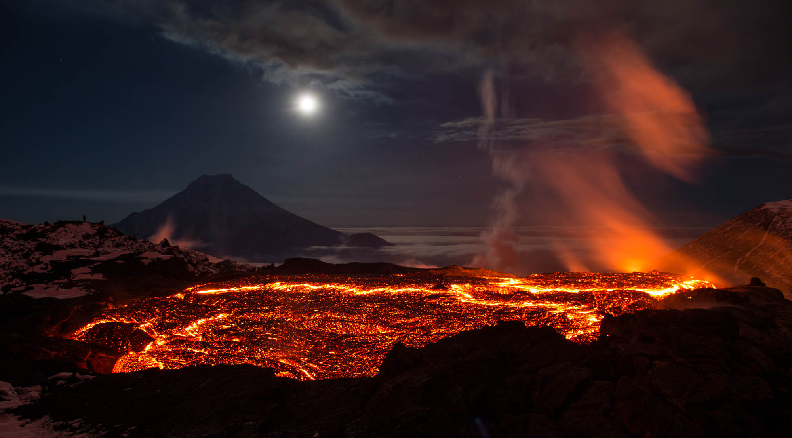

Inside Volcanoes
Take a look inside
The Main Features of the Inside of a Volcano
Volcanoes generally have a central vent surrounded by a steep-sided cone formed from layers of lava and ash. As the magma rises from beneath the Earth's crust, it may become contaminated by local rocks that change its chemical composition, making the eruptions more violent. Ejected debris may range from ash to huge volcanic bombs that weigh several tons.
The magma chamber is the area with massive collection of magma below the earth’s crust from which magma flows out.
After an eruption, the tip or top of the volcano tends to get blown off, leaving a small depression at the top of it.
Main vent is the main exit point (opening or outlet) in a weak zone where molten magma is released to the surface.
Secondary vents are other smaller vents or opening through which ash and gases and lava escape.
Ashes, clouds and cinders occur as the eruption continues, ashes and gases are discharged into the air, which is carried further by wind action.
Layers of ash and lava coat the walls of a volcano and are usually made up of solidified layers of lava and dust.
Inside the Earth’s Crust
Understanding volcanoes starts with understanding the structure of the earth. The outer part of the earth that we see, called the crust, is the top layer of many layers. Underneath the crust are bigger and hotter layers that lead to the center of the earth, the core. Within these layers are huge sections called tectonic plates, which we explain in more detail below. At the bottom of the crust, before we get to the deeper layers, is where we find hot liquid rock called magma, which might be beneath massive amounts pressure.

Tectonic Plates, Magma, Friction, and Pressure
Tectonic plates are parts of the crust that act like giant puzzle pieces. The plates have the ability to move, and when they do, they create problems—like earthquakes, tsunamis, and volcanoes. These natural disasters happen because the movement of the plates cause friction. That friction can create pressure on the magma, and the magma can no longer stay in one place. The magma starts moving. Volcanoes occur when the pressure causes the magma to move toward the surface to flow out or erupt.
Plate Tectonics
Tectonic plates have been linked to the continents’ movements. When the plates move apart or hit one another, earthquakes are created, and they cause the land to break, collide, and move. Plate tectonics is the reason for the formation of continents we know today. When the plates move apart, volcanoes can form and erupt, and when plates move or collide, earthquakes can occur. Plates coming together can also form mountains over time.
